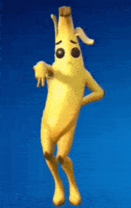
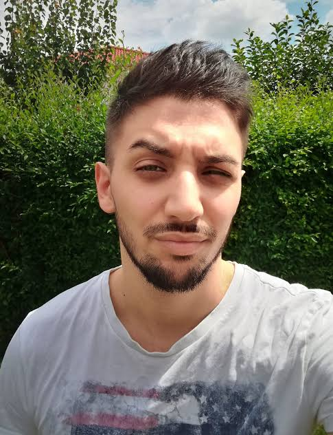

Miért különleges...?
2017 nyarán jelent meg eleinte a Save the World játékmóddal, azonban pár hónapra rá Battle Royale része is lett, utóbbi örvend mai napig nagy népszerűségnek. Egyedülálló játékmenet, teljesen más a többi Battle Royale játékokhoz képest. Egyedi még a családias környezetében, hisz az emberekhez közelebb viszi a Halloweent, karácsonyt és olyan érzés mint ha az egész világgal ünnepelnéd ezeket az ünnepeket. Rengeteg ember első koncertjét is adta, pl. Marshmello koncert vagy a népszerűbb Travis Scott koncert. Több millió ember élhette át egyszerre. Sokszor mondták már, hogy "Fortnite is fading away". But a fade awlays grows back.


